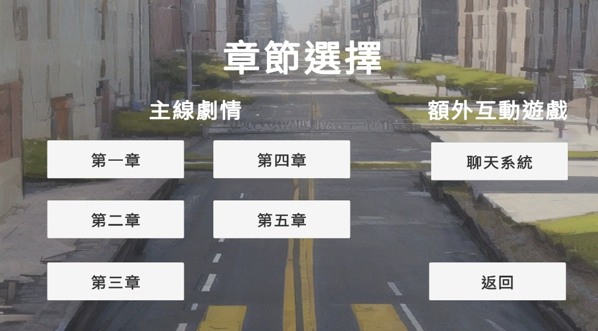
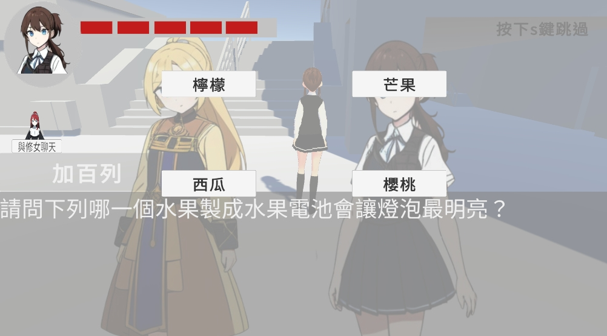
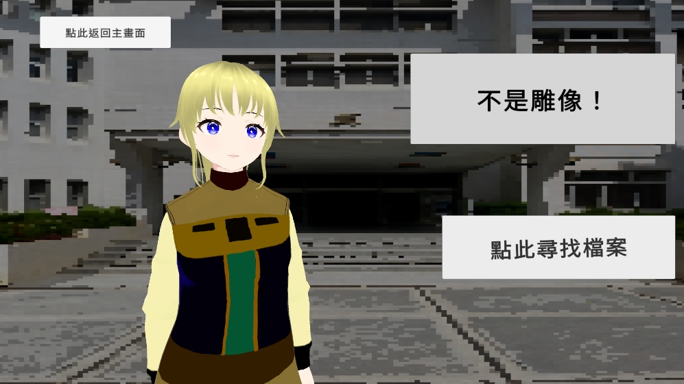
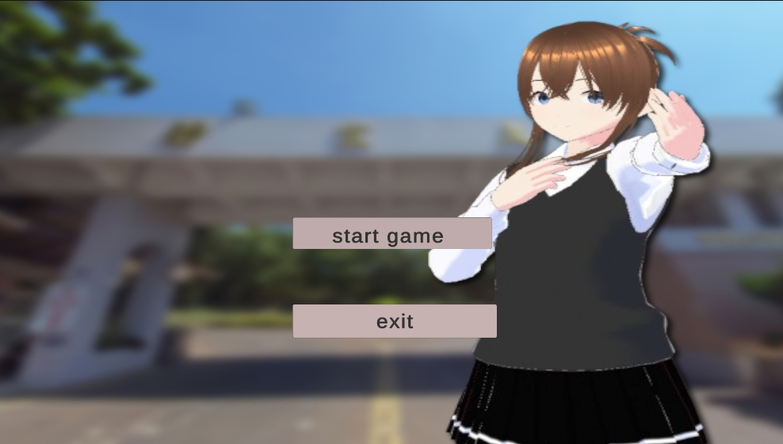
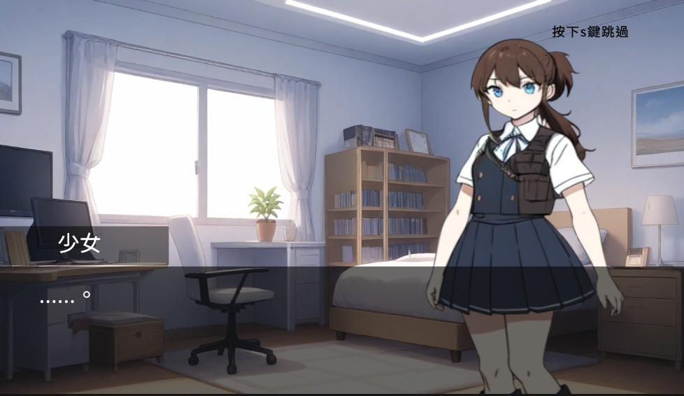
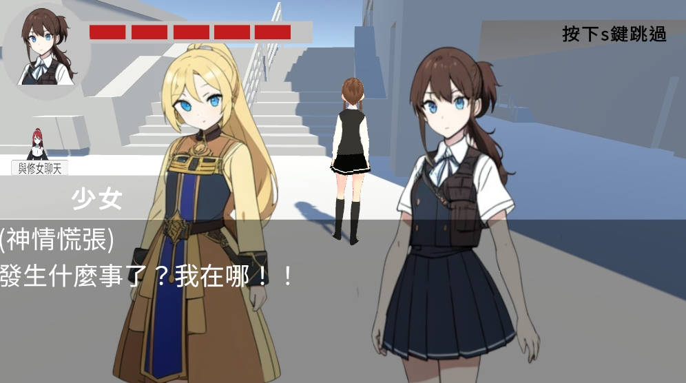
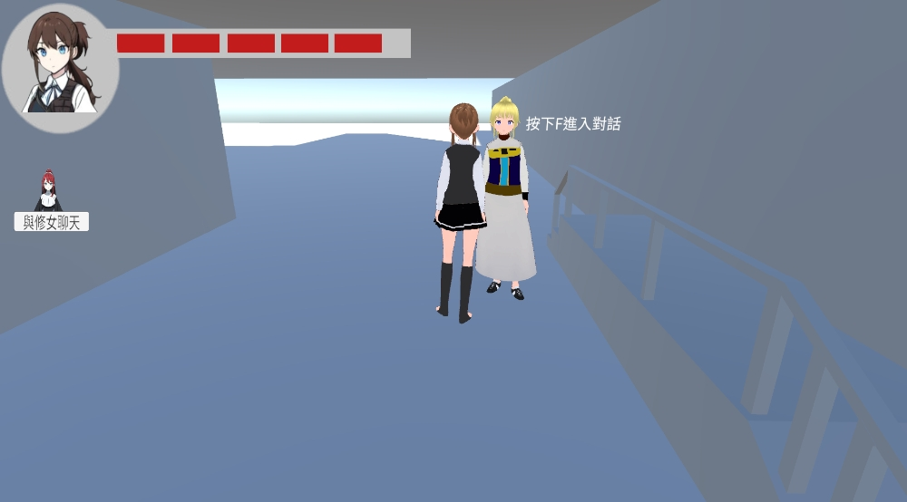

主題與類型
主題：靜界碎片之謎
遊玩類型：解謎
作業系統：Windows
劇情簡介
一名少女陰錯陽差來到異世界「靜界」。為了返回原來的世界，她必須解開神靈提出的問題，集齊三塊靈石碎片，才能開啟通往神界的大門……

特色系統
- 聊天機器人（修女）：透過 Ollama 模型訓練而成，提供另類互動方式。
- 影像辨識系統：使用圖片選取方式，搭配 Windows 平台進行解謎。


遊戲畫面展示
遊戲以 2D & 3D 混合方式製作，搭配章節導向的解謎冒險流程與分支對話系統。




開發技術與工具
- 開發引擎：Unity
- 3D建模工具：Blender、VRoid Studio
- 開發語言：Python（AI 功能）、C#（遊戲核心）
- 動作捕捉：Mixamo
- 音樂製作：Suno
- 2D圖像製作：PixAI